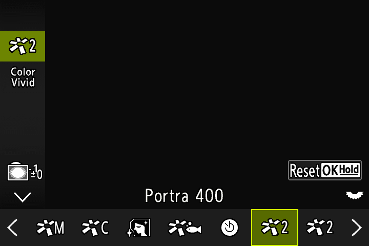
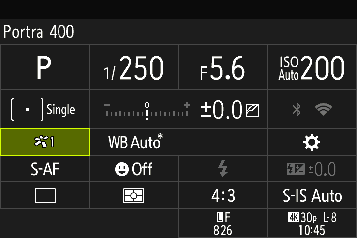
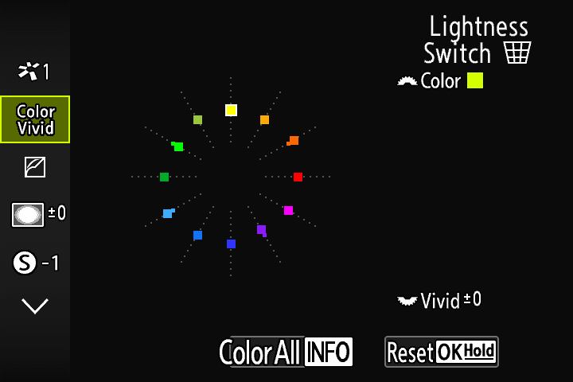
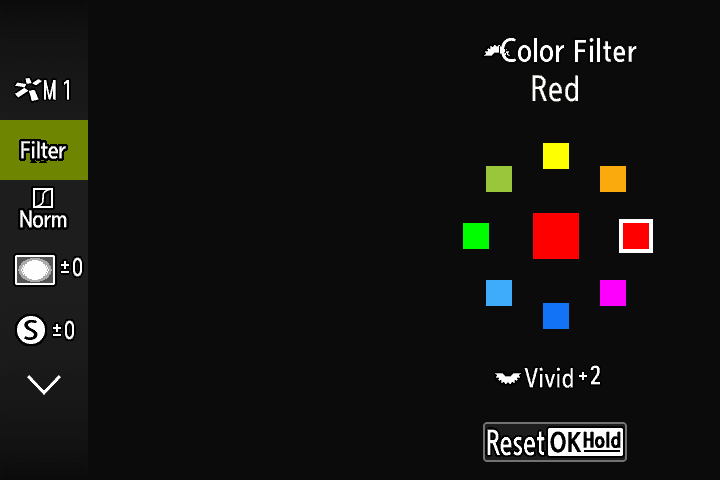

For the OM-5 Mark II · First release
Your colour.
Your looks.
Three look slots. Twelve colours to shape. One file to carry your favourite looks. Caduceus restores the hidden Color Profiles and adds Hue, Lightness, tone controls and Live ND64.

Features
Everything lives in Picture Mode.
Caduceus adds six entries to the camera’s own Picture Mode screen, after Color Creator: three Color Profiles for your looks and three Monochrome Profiles. They look and work like OM’s own menus.
01 / Looks from the card
A small library. One file.
Start from 67 film-inspired looks in LookLab, or make your own. Save up to ten in LOOKS.BIN and copy it to the SD card.
On the camera, select a Color Profile and press the trash button to step through your looks. The look’s name becomes the title, and each of the three slots keeps its own look.

02 / Always know what you’re shooting
The look’s name, where you need it.
The super control panel shows the look’s name whenever the Picture Mode cell is highlighted, so you can check it at a glance without opening the menu.
Once chosen, a look is saved in the camera’s settings. It’s still there after you switch off, with any card or with no card at all, and it can go into custom modes C1–C4.

03 / Fine-tune the colour
Beyond saturation.
The colour wheel controls twelve colours. In the wheel, the trash button switches between Saturation, Hue and Lightness. Adjust one colour, or press INFO to change all twelve at once.
Each Color Profile also remembers its own white balance. Set it as usual, and it comes back whenever you select that profile.




04 / Black and white
Monochrome Profiles, with colour filters.
OM’s Monochrome Profiles 1–3, as on the OM-3 and PEN-F, are back. Each has a colour filter, toning, film grain, a tone curve, sharpness, contrast and shading.
Turn a dial to pick the filter from a ring of eight colour swatches, and the other dial to set its strength.

05 / Shape the light
Live ND up to ND64.
The camera’s Live ND setting gains ND32 and ND64 after ND16, for slower shutter speeds in bright light without a screw-on filter. Both appear on the CP button’s carousel with their own icons.
06 / Feels native
Works the way the camera does.
Every new screen uses the camera’s own menus, icons and controls. Hold OK to reset a setting, as you would on OM’s picture modes, and save any profile into custom modes C1–C4.
All controls and what each does →The screens on this page are captured from the Caduceus firmware running in the OM-Emu emulator.
At a glance
What each profile can do.
| Color Profile 1–3 | Monochrome Profile 1–3 | |
|---|---|---|
Looks from LOOKS.BIN (trash button steps through them) | Yes | — |
| Hue, Saturation, Lightness for 12 colours | Yes | — |
| Tone curve (Shadows, Midtones, Highlights) | Yes | Yes |
| Sharpness, Contrast, Shading | Yes | Yes |
| Own white balance, remembered per profile | Yes | — |
| Colour filter, toning, grain | — | Yes |
| Name on the Picture Mode screen and super control panel | The look’s name | OM’s name |
Plus Live ND32 and ND64 in the camera’s Live ND setting.
Get started
Install in about fifteen minutes.
Caduceus contains no OM firmware. The installer downloads OM’s official firmware 1.1, adds Caduceus, checks the result, and also makes a restore file so you can go back.
How to install
- Check the camera is an OM-5 Mark II on firmware 1.1 (Menu › Setup › Firmware), and read the safety notes.
- Download Caduceus and unzip it. Double-click Make SD card files (Mac or Windows), or run
python3 patch.pyin the folder. - Copy the
DCOLYMPandOM5MODfolders to the top of the SD card. Keep therestorefolder: it is OM’s own firmware, to go back. - Camera off, card in slot 1. Hold OK and switch on. Wait until the light blinks, then switch off and on.
How to use looks
- Make up to ten looks in LookLab, or use the ten starter looks, and put
LOOKS.BINin a folderOM5MODon the card. - Switch on and half-press the shutter button once. The camera reads your looks.
- Press OK, open Picture Mode and move to Color Profile 1, 2 or 3.
- Press the trash button to load a look. Press again for the next one.
- Press down to fine-tune the colour wheel, tone curve, shading, sharpness and contrast.
Compared with the OM-3
What fits in the OM-5 Mark II?
The Mark II has much less free firmware space than the OM-3, so this port focuses on looks and colour controls.
| Feature | OM-3 | OM-5 Mark II |
|---|---|---|
| Look selection | 20 dedicated FILM entries | 3 Color Profile slots; up to 10 looks per file |
| Look names | Title, quick menu, shooting screen | Picture Mode title and super control panel, up to 12 characters |
| HSL, tone, WB shift | Yes | Yes |
| Monochrome Profiles with colour filter | Yes | Yes |
| Extra effects / recipe in EXIF | Yes | Not yet |
What’s next
Extra effects such as Glow and Halation, and more, are on the roadmap.
Roadmap →Changelog →Own an original OM-5?
A separate pre-alpha for testers exists for the original OM-5 (2022, firmware 1.2). There is no working version yet: pre-alpha 1 failed to start on a tester’s camera, and OM’s firmware was restored from the card. If you’re comfortable with that risk and want to help, the tester page explains how.
Original OM-5 pre-alpha →Credits
Built on the work of others.
Thank you to the authors of the projects this one stands on:
fishcu/oly_fw_analysis
By fishcu: the Olympus firmware research that showed how these cameras’ firmware can be read, changed and rebuilt. The OM-5 Mark II work began in a fork of it.
cakelesscoder/caduceus-ep7
By cakelesscoder: Caduceus itself, for the PEN E-P7, and the idea of looks loaded from the card.
androidfanman/caduceus-om3
By androidfanman: Caduceus for the OM-3, its looks and LookLab, and the design of this site.
Details
Licences and attributions are in the NOTICE file.